Operatori, Disegnatore e pagine POS
TARGET: tecnico installatore · DURATA STIMATA: 25 minuti
Obiettivo
Accedere a Hyperetail, entrare nella modalità disegno per personalizzare le pagine, associare a ogni operatore la propria pagina di lavoro e importare pagine di vendita già pronte.
Prerequisiti
- Hyperetail installato e licenza attiva (anche demo).
- Per la modifica delle pagine: accesso come amministratore.
Il login operatore
All'avvio Hyperetail chiede il codice operatore (qui sulla postazione
CASSA01). Ogni schermata, di vendita o di configurazione, è legata a un
operatore con la propria password.
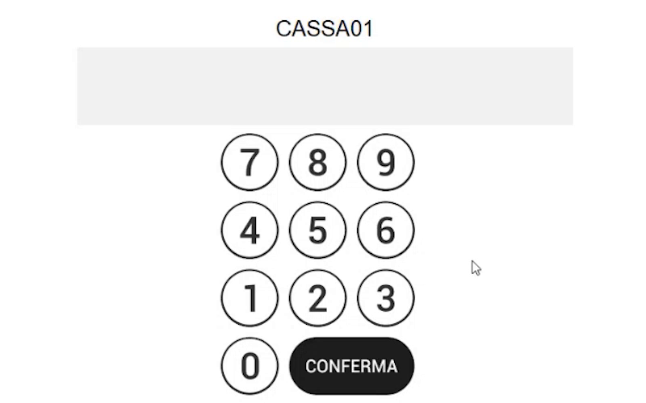
I codici operatore predefiniti di una nuova installazione sono:
| Codice | Operatore | Pagina di ingresso |
|---|---|---|
| 12345 | Operatore base di vendita | Pagina di vendita |
| 99999 | Amministratore (funzioni avanzate) | Pagina di amministrazione |
Per tornare alla schermata del codice operatore dalla pagina di vendita o di amministrazione usa il tasto funzione Chiave (logout dell'operatore).
Password dell'amministratore
Entrando con il codice dell'amministratore compare la pagina di amministrazione (la pagina azzurra di configurazione), da cui si raggiungono Configurazioni generali, statistiche e documenti.
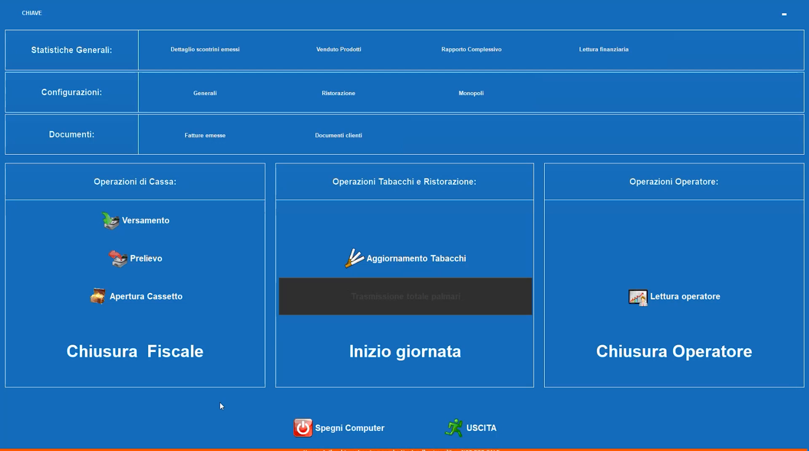
Il Disegnatore: personalizzare ogni pagina
Ogni pagina, di configurazione, di vendita o gestionale, è completamente personalizzabile dalla modalità disegno.
- Fai doppio clic con il tasto destro del mouse sulla pagina (in alternativa usa CTRL+SHIFT+D).
-
Rispondi Sì alla domanda Sicuri di voler entrare nella modalità disegno?
-
Fai clic con il tasto destro su un tasto per aprire il menu contestuale del tasto:
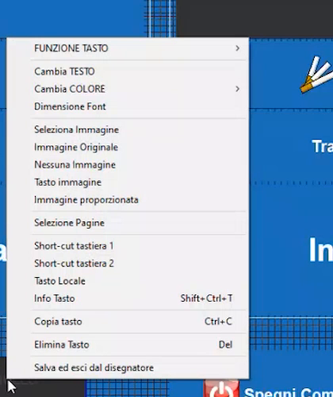
Voce Funzione Cambia TESTO / Cambia COLORE / Dimensione Font Aspetto del tasto Seleziona Immagine, Immagine Originale, Nessuna Immagine, Tasto immagine, Immagine proporzionata Immagine sul tasto Selezione Pagine Collega il tasto a una pagina Short-cut tastiera 1 / 2 Scorciatoie da tastiera Tasto Locale Tasto valido solo per la postazione Info Tasto (Shift+Ctrl+T) Informazioni sul tasto Copia tasto (Ctrl+C) / Elimina Tasto (Del) Duplica o rimuove Salva ed esci dal disegnatore Chiude il Disegnatore salvando le modifiche -
Per assegnare una funzione al tasto apri FUNZIONE TASTO: le funzioni sono raggruppate per categoria (Gestione Pagine, Operatori, Tastierino Numerico, Reparti, Articoli/PLU, Listini, Sconto/Maggiorazione, Forme di Pagamento, Operazioni Cassetto, Gestione clienti, Funzioni su Scontrino, Documenti, Operazioni su Magazzino, Ristorazione, Prepagato, Operazioni su telematico, Gestione Celiachia, Gestione Eliminacode, Chiusure e Varie, Statistiche e stampe).
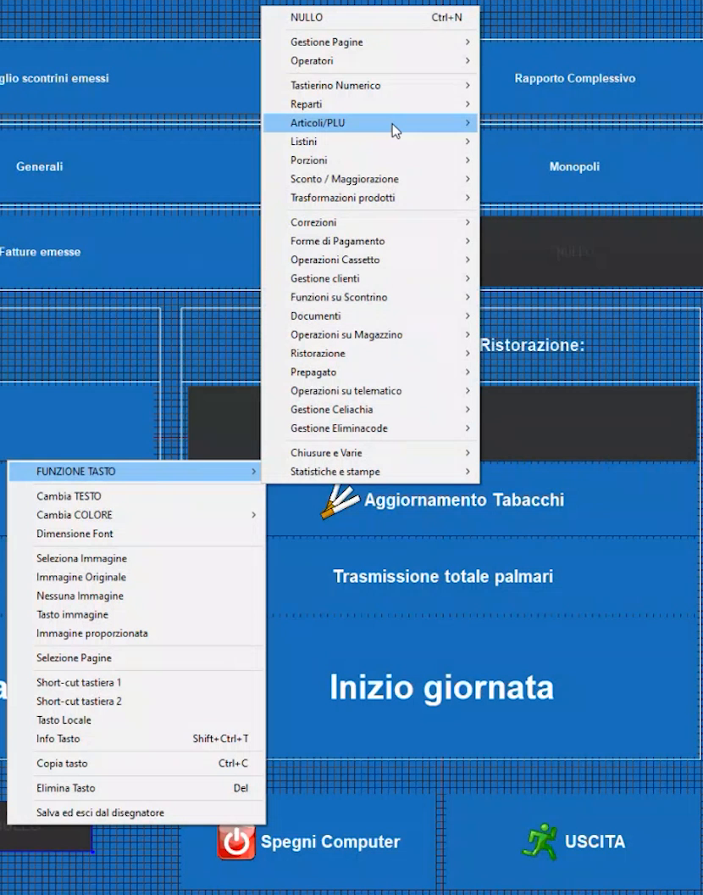
-
Per aggiungere tasti o aree fai clic con il tasto destro in un punto della pagina senza oggetti: compare un menu che permette di creare nuovi elementi nella posizione del puntatore.
- Al termine scegli Salva ed esci dal disegnatore.
Associare a ogni operatore la sua pagina
Gli operatori e le rispettive pagine d'ingresso si definiscono in Configurazioni generali → Operatori.
-
Dalla pagina di amministrazione apri Configurazioni → Generali: si apre il menu Configurazioni generali (pagina 1 di 2).
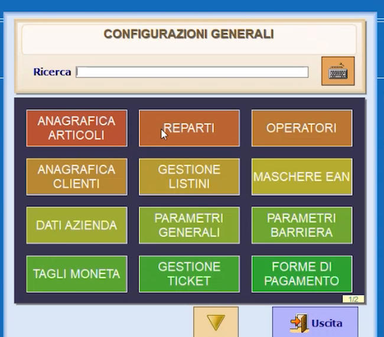
-
Premi OPERATORI.
-
Seleziona l'operatore: nel campo Ingresso Pagina scegli la pagina che l'operatore vedrà dopo il login.
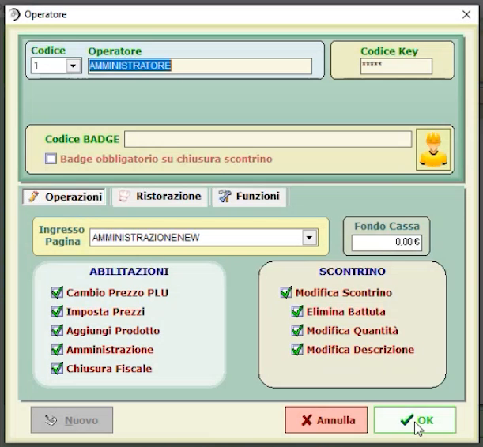
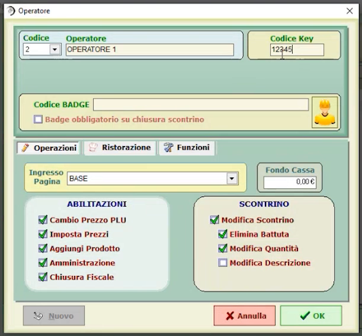
-
Nella stessa scheda imposta le limitazioni dell'operatore:
Gruppo Opzioni Abilitazioni Cambio Prezzo PLU, Imposta Prezzi, Aggiungi Prodotto, Amministrazione, Chiusura Fiscale Scontrino Modifica Scontrino, Elimina Battuta, Modifica Quantità, Modifica Descrizione Nell'esempio l'Operatore 1 ha tutte le opzioni attive tranne Modifica Descrizione.
-
Premi OK.
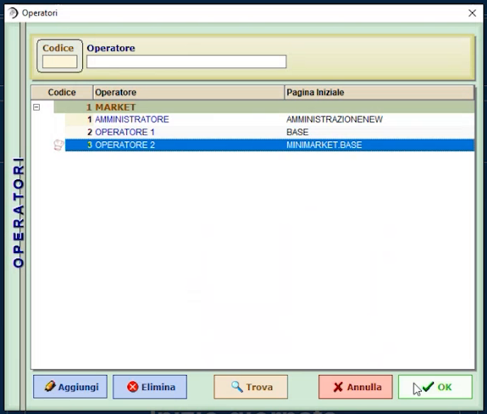
Nell'elenco, per ogni operatore compare la pagina iniziale associata (AMMINISTRAZIONENEW, BASE, MINIMARKET.BASE). Dalle schede Ristorazione e Funzioni si impostano ulteriori limitazioni.
Pagine POS: importare pagine già pronte
Le pagine di vendita si gestiscono in Configurazioni generali → PAGINE POS (pagina 2 di 2 del menu). Da qui puoi personalizzare, creare, modificare, esportare e importare pagine, anche da database o da pagine create su altri impianti.
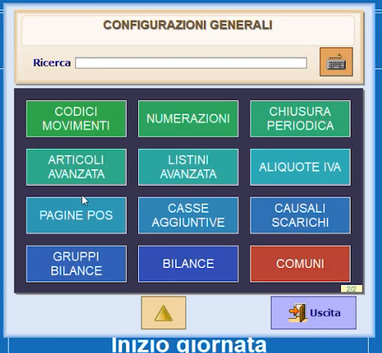
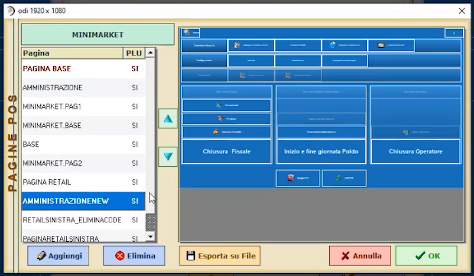
Per importare una pagina da file:
- In Pagine POS premi Aggiungi: si apre una pagina vuota.
-
Dal pannello IMPORT scegli File (le altre voci sono Pagina e Modello).
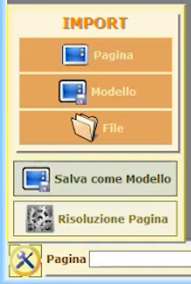
-
Seleziona il file della pagina creata in precedenza: la pagina viene caricata nel Disegnatore e può essere ancora modificata.
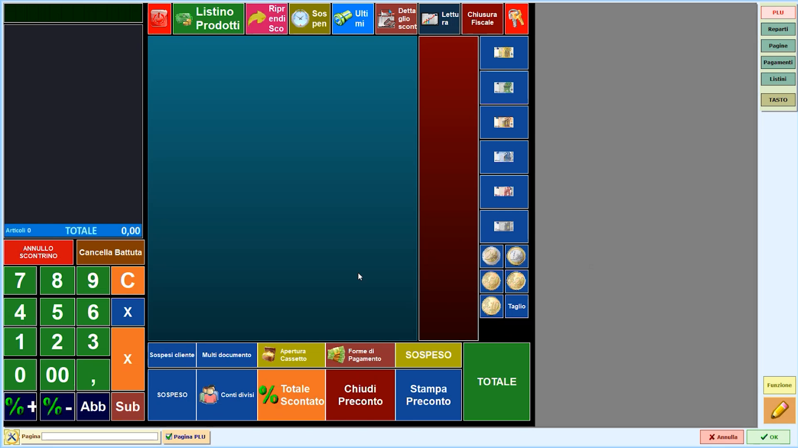
-
Assegna il nome alla pagina e premi OK per salvarla nel database.
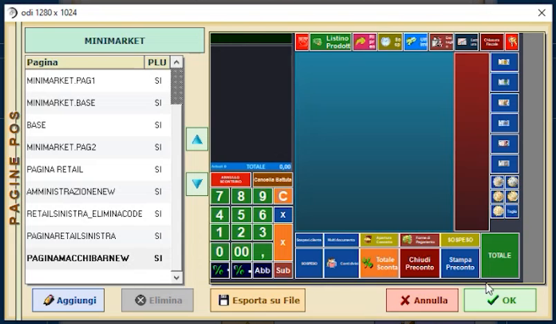
-
Torna in Operatori e, nel campo Ingresso Pagina, associa la nuova pagina all'operatore desiderato.
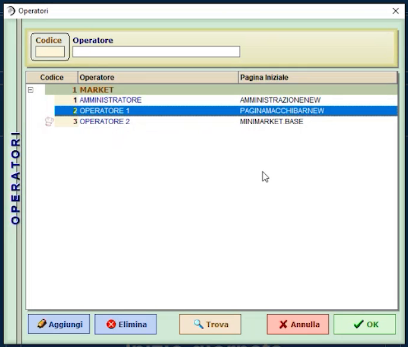
Pagine e risoluzione
La pagina di vendita può avere layout diversi (anche verticale): la finestra Pagine POS indica la risoluzione della pagina selezionata. Dal pannello IMPORT sono disponibili anche Salva come Modello e Risoluzione Pagina.
Verifica
- Esci dalla pagina con il tasto Chiave ed entra con il codice 12345: compare la pagina di vendita che hai associato all'operatore.
- Entra con 99999: compare la pagina di amministrazione.
Errori comuni
| Sintomo | Causa e soluzione |
|---|---|
| L'operatore non vede la nuova pagina | Verifica in Operatori il campo Ingresso Pagina, poi esci con il tasto Chiave e rientra con il codice operatore |
| Non riesci a entrare nelle configurazioni | Hai usato il codice operatore base: entra con il codice dell'amministratore (99999) |